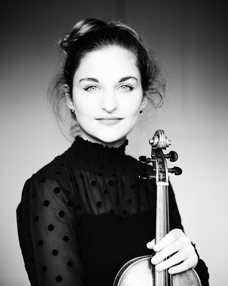

|

Alexandra
Soumm
French violinist Alexandra Soumm is a multi-faceted artist who is equally at home in concerto and chamber repertoire.
Alexandra has appeared with the London Philharmonic, Philharmonia Orchestra, Israel Philharmonic, Orchestre Symphonique de Montréal,Galicia Symphony, Danish National Symphony, NHK Symphony, Detroit Symphony, Baltimore Symphony, and the LA Philharmonic at the Hollywood Bowl among many others. She has given recitals at the Auditorium du Louvre (Paris), Palais des Beaux- Arts (Brussels), and Wigmore Hall (London) and has also appeared at the City of London Festival, and the festivals of Deauville, Schleswig-Holstein, Verbier, and Sommets Musicaux de Gstaad. A passionate supporter of the newest generations of musicians, Ms. Soumm has loved her work with Youth Orchestra of the Americas, the Animato Foundation, the Sphinx Foundation, and Orchestre Français des Jeunes, and has maintained an involvement with the Seiji Ozawa International Academy in Switzerland for over 10 years.
Alexandra’s strongest ties are to France and England where she has ongoing relationships with many leading orchestras including Paris, Toulouse, Bordeaux, Lyon, Montpellier, and most of the BBC ensembles with whom she worked as former BBC 3 New Generation Artist and London Music Masters Awardee.
Born in Moscow, Alexandra started to learn the violin at the age of five and gave her first concert two years later. She later moved to Vienna to study with the renowned pedagogue Boris Kuschnir and won the Eurovision Competition in 2004. In 2012, along with two friends, she founded the non-profit organization Esperanz’Arts, whose goal is making the Arts in all its forms accessible to people in schools, hospitals, prisons and homeless shelters. Alexandra was named Godmother of El Sistema France.
Passionate for teaching and communicating her artistry, she has given masterclasses in the United States, Venezuela, Brazil, UK, Japan, Israel, and Kenya. In 2018, she joined the Artistic and Pedagogical Committee of the Musica Mundi school, based in Belgium, and was named teacher at the The University of Music and Performing Arts, Vienna from October 2021.
Alexandra defends a wide range of repertoire, from baroque to contemporary music, as well as the transversality between the arts, creating numerous projects around poetry, literature and philosophy. Alexandra Soumm works regularly with contemporary composers, such as Christoph Ehrenfellner, who composed a string quartet and his second violin concerto for her, Kryštof Mařatka, Benoît Menut, Emile Daems, and Eric Tanguy, who composed a piece for soprano and piano, based on her poem “Cercle.”
Alexandra plays on a Gioffredo Cappa violin, made around 1700.
|